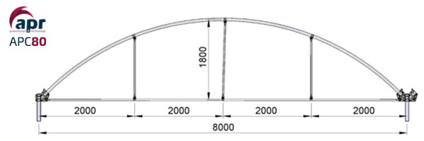
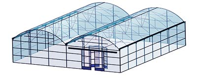

Invernadero Capilla
El invernadero tipo capilla o también denominado multicapilla, se caracteriza por la forma de su cubierta formado por arcos curvos semicirculares y por su estructura totalmente metálica.
Este tipo de invernadero entraría dentro de la categoría de los comúnmente denominados multitunel, junto a los invernaderos de tipo Gótico e Invernaderos de tipo Asimétrico. El montaje se realiza a modo de Mecano. Las diferentes partes se unen con grapas, tuercas y tornillos, por lo que no es necesario soldar.
Novedades Agrícolas fabrica este invernadero bajo su marca APR, denominando a este modelo como APC80 o APC96, según anchos estándares.

Características Estándares

Las dimensiones Estándares de este tipo de invernaderos son las siguientes:
- Ancho: 8 m - 9.60 m
- Altura bajo canal: 4 m - 5 m – 5.50 m
- Altura al zenit: 5.80 m - 6.30 m - 6.80 m
- Separación entre pilares: 5 m (interior) – 2,50 m (exterior)
Partes estructurales fundamentales:
Pilares:
- Pilares laterales: Tubo cuadrado galvanizado en caliente
- Pilares interiores: Tubo cuadrado galvanizado en caliente
- Pilares frontales: Tubo cuadrado galvanizado en caliente
Arcos:
- Tipo: Arcos de capilla tipo semicircular en tubo redondo galvanizado en caliente
- Distribución: cada 2.5 metros, apoyados en pilares cada 5 metros.
Refuerzos
- Refuerzos perimetrales: Podemos tener pies de amigo o refuerzos laterales Cerchados
- Refuerzos interiores: Refuerzos en K o cruces de San Andrés
Canales
- Función: evacuación del agua de lluvia.
- El volumen de agua capaz de desalojar es en función del desarrollo de la chapa con la que se fabrica
Perfiles y correas:
- Su función principal es fijación de los materiales de cubierta, pero también actúan como refuerzos de la estructura.
¿Cuándo es adecuada su elección?
El empleo de este tipo de invernadero está pensado para climas templados y fríos, aunque la experiencia nos dice que con las modificaciones adecuados se pueden adaptar a casi todo tipo de condiciones climáticas, como puede ser el reforzado de su estructura para climas más fríos, donde las cargas por nieve pueden ser un problema.
Por otro lado tienen gran resistencia a fuertes vientos, así como rápida instalación al ser estructuras prefabricadas.
Ventajas de los invernaderos tipo Capilla
- Pocos obstáculos en su estructura.
- Buena ventilación.
- Buena estanqueidad a la lluvia y al aire.
- Permite la instalación de ventilación cenital, así como ventilación perimetral
- Buen reparto de la luminosidad en el interior del invernadero.
- Fácil instalación.